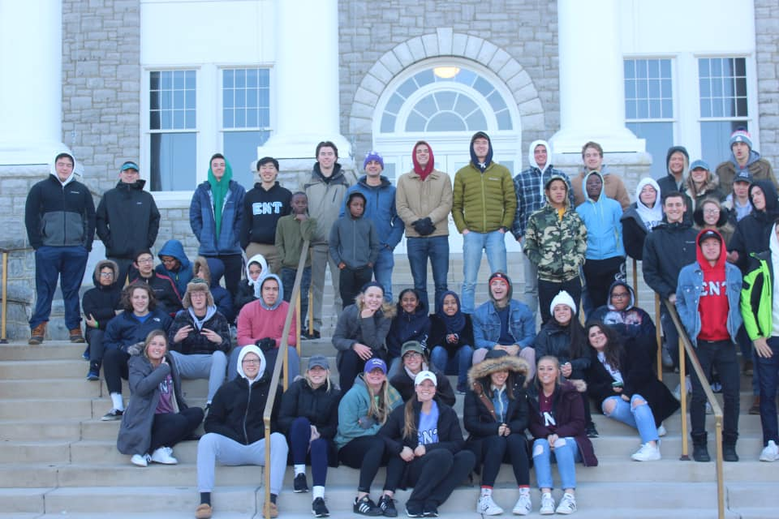

Welcome to Epsilon Nu Tau's Kappa Chapter!

What is Epsilon Nu Tau?
ENT is the nation's first entrepreneurship fraternity. We are a coed, professional organization that was founded in the spring of 2008. Epsilon Nu Tau is based on the principles & ideals of entrepreneurship & brotherhood, professionalism, sales, and ethical business practices.
Our Chapter's History
In spring 2016, JMU students formed the Kappa chapter of the co-ed entrepreneurship fraternity, Epsilon Nu Tau. The founding executive team of 5 students reviewed 60 applications and inducted 28 members in the spring semester. Today, ENT has over 90 members ranging from 10 different majors and concentrations.